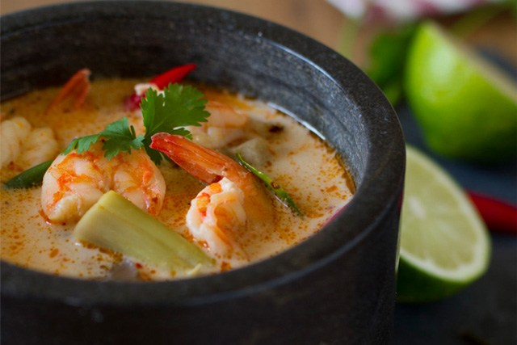
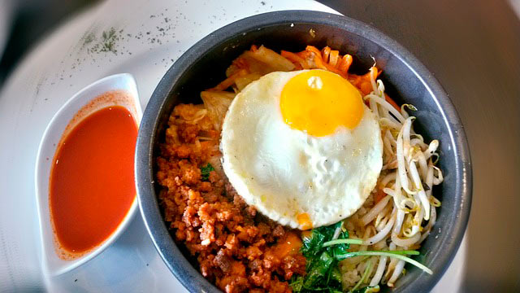

Tom Yam Kung (ต้มยำกุ้ง)
1 de Diciembre de 2017
Este es uno de los platos más famosos de la cocina tailandesa, se trata de una sopa de langostinos, picante y muy aromatizada, con matices cítricos. Como todas las recetas, existen distintas versiones con y sin leche de coco además se puede preparar con distintos ingredientes como pollo, pescado, calamar, una mezcla de mariscos... La versión de hoy es: Tom Yam Kung Nam Kon (ต้มยำกุ้งน้ำข้น) preparada con langostinos, leche de coco y un nivel medio de picante. En éste plato se pueden ajustar las cantidades de chili, pasta de chili, limón, salsa de pescado y azúcar para conseguir el sabor que más nos guste.
La mezcla de hierbas aromáticas como el limoncillo, el galangal, las hojas de lima kaffir, el cilantro, el picante de los chilis y el zumo de lima lo convierten en un plato insignia de la gastronomía tailandesa por la mezcla de aromas y sabores.
Ingrediente
- 400 ml de caldo de pollo o agua
- 200 ml de leche de coco, 50 ml para la mezcla del bol y 150 ml para hervir junto al caldo de pollo
- 150 g de langostinos pelados
- 120 g de setas
- El zumo de una lima
- 1 cucharada de pasta de chili thailandés
- 1.5 cucharada de salsa de pescado
- 1/2 cucharadita de azúcar
- 3 dientes de ajo pelados
- 3 chilis
- 1 tallo de limoncillo
- 4 rodajitas de galangal
- 3 o 4 hojas de lima kaffir
- unos tallos de cilantro
Preparación
- Preparamos las verduras, con la hoja del cuchillo chafamos los ajos y los chilis, de ésta forma la sopa no picará tanto, cuanto más se machaquen los chilis más picante será el resultado, rompemos un poco el tallo del limoncillo para que suelte mejor todo su aroma y lo cortamos en trozos de unos dos centímetros, cortamos unas cuatro rodajitas de galangal, picamos el cilantro y si es necesario partimos por la mitad los champiñones de ostra más grandes.
- En una olla ponemos a hervir el caldo de pollo.
- Mientras esperamos, en un bol vamos a preparar una mezcla* con sabor y color intenso que añadiremos al final de nuestra sopa*, añadimos 50 ml de leche de coco, 1 cucharada de pasta de chili con su aceite, el zumo de una lima, 1 cucharada de salsa de pescado. Lo removemos bien y lo reservamos para luego.
- Cuando el caldo de pollo esté hirviendo añadimos los 150 ml de leche de coco y seguidamente incorporamos el limoncillo, el galangal, los ajos, los chilis y las hojas de lima kaffir sin el nervio central.
- Cuando la sopa vuelca a hervir, añadimos las setas, removemos un poco y la dejamos cocinar un par de minutos.
- Incorporamos los langostinos, volvemos a remover y ponemos un poquito de azúcar, seguimos cocinando un minuto más y apagamos el fuego.
- Para finalizar añadimos la mezcla* del bol que dará el sabor y color típico y delicioso del Tom Yam.
- usto antes de servir incorporamos una buena cantidad de cilantro picado y nuestra sopa ya está lista para comer.
Bibimbap (비빔밥)
4 de Diciembre de 2017
Este es uno de los platos típicos de Corea del Sur, reconocido internacionalmente por sus sanas propiedades a la salud y por ayudar a una dieta equilibrada en verduras. Antiguamente el bibimbap era llamado goldongban, o hwaban, que significa mezclar. Los ingredientes difieren según la zona pero en general los tipos de los ingredientes son muy parecidos: arroz, vegetales, carne y huevo.
Con el paso del tiempo el bibimbap ha ido evolucionando para adaptarse a las nuevas tendencias y al gusto de las nuevas generaciones. Se creó una receta especial para los astronautas, y lo encontramos también en versión de comida rápida para aquellos que disponen de poco tiempo para disfrutarlo en un restaurante. En la ciudad de Jeonju, además de probar el auténtico bibimbap tradicional de Corea, están a la venta tentempiés derivados de bibimbap como croquetas rellenas con sabor a bibimbap y vasos de bibimbap, o también llamado mix bibimbap, listos para comer mientras da una vuelta por la ciudad. Para los que no les gusta el picante, también hay versiones suaves como el beoseot bulgogi bibimbap (setas y carne) y gangdoejang bibimbap (pasta de soja y vegetales variados), que son los más populares.
Ingrediente
Para 4 personas
- 200 g de ternera
- 1 c/c de azúcar
- 1 c/s de salsa de soja
- 1 diente de ajo
- 1 c/c de aceite de sésamo, cebolleta, jengibre, pimienta.
- 1 puerro,
- 4 huevos
- 240 g de arroz jazmín
- Hojas de limonero o lima kéfir
Salsa Bulgogi
- 1 diente de ajo
- soja
- 1 c/c de aceite de sésamo
- 2 c/s sake
- 2 c/s de mirin
- 1 c/s sésamo tostado
- 1 cebolleta
- 1 c/c de miel,
- 1 c/c de salsa picante
- 1/2 pera
Namuru (verduras)
- Namuru de Pat choi:
- 200 g de pat choi, sal, ajo, salsa de soja, aceite de sésamo, semilla de sésamo blanco molido, aove.
- Namuru de Calabacín:
- 200 g de calabacín, sal, ajo, sal, aceite de sésamo, aove.
- Namuru de apionabo:
- 200 g de apionabo, 1 c/c de puerro pochado, sal, ajo, salsa de soja, puerro, aceite de sésamo, semilla de sésamo blanco molido, aove.
- Namuru de ocra:
- 200 g de ocra, sal, aove.
- Namuru de zanahoria:
- 200 g de zanahoria, salsa de soja, aove.
- Namuru de seta sitake:
- 200 g de setas sitake, 1 c/c de cebolleta, sal, ajo, salsa de soja, aceite de sésamo, semilla de sésamo blanco un poco molido, aove, 50 g de tiras de beicon, 50cc de vino de Jerez.
Preparación
Mise en place
- Cortar el pat choi en tiras en finas.
- Cortar el calabacín, la zanahoria y el apio nabo en palitos.
- Cortar la ocra en rodajas de 1 cm, de grosor.
- Picar el puerro lo más pequeño posible y pocharlo con un poco de aove, reservar.
- Trocear las setas.
La Ternera
- Mezclar la soja,, el jengibre, el ajo y la cebolleta rallados, las semillas de sésamo machacadas.
- Cortar la ternera en tiras, pimentar y untar con la mezcla anterior, dejar reposar por lo menos quince minutos.
- Escurrir la carne y sofreírla en una sartén con el aceite de sésamo. Reservar.
Los Namuru (verduras):
- Namuru de Pat choi: Blanquear y rehogar en aove, añadir las semillas de sésamo machadas, la soja y una cucharadita de aceite de sésamo.
- Namuru de Calabacín: Sofreír los palitos de calabacín con aove; colocar en un bol y aliñar con la sal, el ajo y el aceite de sésamo.
- Namuru de 0cra: Sofreír la 0cra con aove hasta que comience a estar dorada. Reservar.
- Namuru de apionabo: En una sartén sofreír con un poco de aove, dejarlo hasta que esté dorado y tierno, añadir 1 cucharada de puerro pochado, el ajo y las semillas de sésamo machadas, terminar con una cuchara de soja.
- Namuru de zanahoria: Dorar las zanahorias con un poco de aove, añadir la salsa de soja y glasearlas.
- Namuru de seta sitake: Dorar la cebolleta con el bacón en un poco de aove, añadir las setas y dejar cocinar hasta que estén listas, añadir una cucharada de jerez y dejar evaporar.
Los Huevos
- En una sartén muy caliente hacemos los huevos a la plancha.
La Salsa Bulgogi
- Machacamos en el mortero el ajo, el sésamo tostado, la pera pelada y troceada y la cebolleta hasta que se conviertan en una pasta, le incorporamos poco a poco el aceite de sésamo, la soja, el sake, el mirin, la miel y la salsa picante.
- Mezclamos bien. Probamos para ajustar el punto.
Presentación
- Empieza a montar con el arroz muy caliente para que el plato este a temperatura adecuada.
- Colocamos en el centro una montaña de arroz, encima el huevo y rodeando el resto de los ingredientes, uno a uno alternando los colores, formando una corona.
- Justo en el momento de comer mezcla todos los ingredientes y añade la salsa.